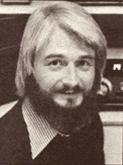
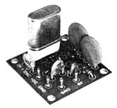

It used to be that any old shortwave receiver could be used to eavesdrop on ham activities ... as long as the unit covered reasonable chunks of the 3 to 30 mHz frequency range. Then-in the 1950's-amateur radio operators switched their voice transmission from AM to the more efficient single sideband (SSB) mode.
You see, in AM voice transmission a constant frequency carrier signal is transmitted along with the sidebands that "contain" the actual voice information. When the signal reaches a receiver, this carrier helps to demodulate (or make sense of) the voice sidebands.
In the SSB mode, on the other hand, no carrier at all is transmitted. This allows the radio builder to use less transmitter power, but also requires that an artificial carrier be generated within the receiver. The circuit that produces the receiver carrier signal is called a Beat Frequency Oscillator, or BFO (such units are also used to allow Morse code signals to be heard as on-off tones rather than a starting and stopping rush of noise).
Some modern shortwave receivers-such as the Sony ICF-5900W mentioned in this column in MOTHER NO. 54-come equipped with a BFO . . . but many broadcast-type receivers don't have this feature. Fortunately, it's easy to add BFO to such a set. Since most post-1930 receivers use 455kHz IF amplifier stages, you can sim. ply generate a 455-kHz signal and couple it into the receiver's IF amplifier.
Furthermore, if you use a crystal-controlled oscillator to produce the signal, you can be sure the frequency will be very close to the necessary 455 kHz ... and won't have to tune or calibrate the oscillator. Let me describe how just such a BFO circuit can be built . . . by anyone with a little electronic experience.
First of all, you'll have to locate a 1-1/2" X 1-1/2" one-stage circuit board kit. I bought mine (a Model OF-1 LO Oscillator, catalog number 035108) from International Crystal Manufacturing Company (Dept. TMEN, M/S Dept., P.O. Box 32497, Oklahoma City, Oklahoma 73132) for $4.48, postpaid. In addition to the kit, you'll need the following:
one 455.0 kHz crystal (see text)
two 2200 picofarad (pf) ceramic or film capacitors
one small SPST toggle switch (such as Radio Shack No. 275-8068)
insulated hookup wire
hand tools . . . including a soldering iron and rosin core solder
If you're adding a BFO to a transistor receiver powered by 6, 9, or 12 volts DC . . . the BFO will "steal" its power from the receiver's power source. However, should you want to convert a vacuum tube receiver, you'll have to power the BFO from a separate 9-volt battery such as Radio Shack No. 23-583 ... which should be used with that firm's battery clip No. 270-325.
Since the OF-1 LO Oscillator was not originally designed to operate at frequencies as low as 455 kHz, a few substitutions must be made when soldering parts into the circuit board.
To begin, put one of the 470 pf capacitors (supplied with the kit) into the "C3" holes (instead of inserting the 30 pf capacitor in that position . . . as directed by the instruction sheet). Then Install that unused 30 pf capacitor in the ".001" holes, rather than inserting the .001 microfarad capacitor that the instructions specify. Next, insert the two 2200 pf capacitors (which you purchased separately) into the "C1" and "C2" pairs of holes. Complete the rest of the circuit board's parts Installation as specified in the kit instructions ... ignoring any references to the parts you've already installed according to the above directions.
Once the circuit board is wired, simply make the connections to the power source and hook the board up to your receiver. Remember to be careful to match the polarity of the power source and receiver ... the (+) side of the battery (or whatever) must be attached to the " + DC" terminal on the board, while the (-) side will hook up with one of the board's "GND" terminals.
The board and toggle switch can be mounted to the inside wall of your receiver cabinet or-if you'd prefer-in a separate plastic box (such as Radio Shack No. 270231). Connect an insulated wire-which will carry the 455-kHz signal to the receiver's IF amplifier-to the board terminal marked "RF". If you're using a tube-type receiver, you may find that no direct connection is needed and that merely laying the "free" end of the wire near the socket of the first IF amplifier tube will produce sufficient BFO Injection. The impedances in a transistor set are lower than those in a tube set, though, and you'll usually have to solder the lead directly to the base or collector of the first IF transistor. (A "base" connection will provide a higher BFO injection level than will a "connector" connection.)
Your aim is to get enough BFO injection so that the volume of received signals goes down appreciably when the BFO is switched on. (This necessary gain reduction can be compensated for, of course, by simply turning the volume control up.)
It may take a bit of experimentation before you achieve the optimum BFO injection level for your set. Just remember that-if the new BFO signal is not strong enough-SSB signals will remain distorted despite all your efforts to tune them in, while if the BFO is too strong-receiver sensitivity will suffer and you won't be able to hear weak stations .. . even with the volume turned all the way up. Using those "symptoms" as guidelines, you should be able to "fine tune" your BFO with little trouble.
(I'd also like to offer a few specific tips on obtaining the miscellaneous BFO conversion components. I bought my crystal from JAN Crystals, Dept. TMEN, 2400 Crystal Drive, Fort Myers, Florida 33901. It's a 455.0 kHz, .02% tolerance at 32 pf, HC6U holder . . . and cost me $5.00 postpaid. The required 2200 picofarad capacitors can be purchased at most any electronic supply store or from your local TV serviceman . . . and the latter could probably also help you locate the first IF stage of your particular receiver, and point out the transistor base and emitter connection points.)
Finally, keep in mind that tuning in SSB stations is trickier than is "dialing in" AM. The BFO frequency must have just the right relationship to the sideband frequencies if the transmitted voice is to sound natural. Tune slowly and carefully, using the receiver's fine-tuning control if your unit has one.
Peace,
Cop Macdonald (VE1BFL) P.O. Box 2941
Charlottetown
Prince Edward Island
Canada C1A 8C5
New Directions Radio is an international network of radio amateurs concerned with those ways of using ham radio (and related modes of communicating) that promote our own growth as individuals, and which we perceive as helping to create a more aware, more caring, and more responsible human society. We encourage all who share these interests to work with us. Among our regular on-the-air activities is the "New Directions Roundtable West", held each Sunday, Tuesday, and Friday evening at 8 p.m. Pacific time on 3898 or 3870 kHz.
|
 |
 |
|